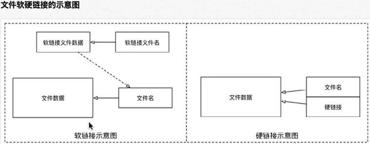

<!DOCTYPE HTML>
<html lang="" >
    <head>
        <meta charset="UTF-8">
        <meta content="text/html; charset=utf-8" http-equiv="Content-Type">
        <title>2.6 文件链接 · Linux-运维之美</title>
        <meta http-equiv="X-UA-Compatible" content="IE=edge" />
        <meta name="description" content="">
        <meta name="generator" content="GitBook 3.2.3">
        
        
        
    
    <link rel="stylesheet" href="../../gitbook/style.css">

    
            
                
                <link rel="stylesheet" href="../../gitbook/gitbook-plugin-disqus/plugin.css">
                
            
                
                <link rel="stylesheet" href="../../gitbook/gitbook-plugin-search-plus/search.css">
                
            
                
                <link rel="stylesheet" href="../../gitbook/gitbook-plugin-advanced-emoji/emoji-website.css">
                
            
                
                <link rel="stylesheet" href="../../gitbook/gitbook-plugin-multipart/multipart.css">
                
            
                
                <link rel="stylesheet" href="../../gitbook/gitbook-plugin-katex/katex.min.css">
                
            
                
                <link rel="stylesheet" href="../../gitbook/gitbook-plugin-splitter/splitter.css">
                
            
                
                <link rel="stylesheet" href="../../gitbook/gitbook-plugin-tbfed-pagefooter/footer.css">
                
            
                
                <link rel="stylesheet" href="../../gitbook/gitbook-plugin-anchors/plugin.css">
                
            
                
                <link rel="stylesheet" href="../../gitbook/gitbook-plugin-toggle-chapters/toggle.css">
                
            
                
                <link rel="stylesheet" href="../../gitbook/gitbook-plugin-prism/prism-okaidia.css">
                
            
                
                <link rel="stylesheet" href="../../gitbook/gitbook-plugin-fontsettings/website.css">
                
            
        

    

    
        
        <link rel="stylesheet" href="../../website.css">
        
    

        
    
    
    
    <meta name="HandheldFriendly" content="true"/>
    <meta name="viewport" content="width=device-width, initial-scale=1, user-scalable=no">
    <meta name="apple-mobile-web-app-capable" content="yes">
    <meta name="apple-mobile-web-app-status-bar-style" content="black">
    <link rel="apple-touch-icon-precomposed" sizes="152x152" href="../../gitbook/images/apple-touch-icon-precomposed-152.png">
    <link rel="shortcut icon" href="../../gitbook/images/favicon.ico" type="image/x-icon">

    
    <link rel="next" href="compress.html" />
    
    
    <link rel="prev" href="find.html" />
    

    
        <link rel="shortcut icon" href='../../assets/images/favicon.ico' type="image/x-icon">
    
    
        <link rel="bookmark" href='../../assets/images/favicon.ico' type="image/x-icon">
    
    
        <link rel="apple-touch-icon" href='../../assets/images/apple-touch-icon.png'>
    
    
        
        <link rel="apple-touch-icon" sizes="120x120" href="../../assets/images/apple-touch-icon-120x120.png">
        
        <link rel="apple-touch-icon" sizes="180x180" href="../../assets/images/apple-touch-icon-180x180.png">
        
    

    </head>
    <body>
        
<div class="book">
    <div class="book-summary">
        
            
<div id="book-search-input" role="search">
    <input type="text" placeholder="Type to search" />
</div>

            
                <nav role="navigation">
                


<ul class="summary">
    
    

    

    
        
        
    
        <li class="chapter " data-level="1.1" >
            
                <a target="_blank" href="http://colin-chang.site/about/">
            
                    
                    About Me
            
                </a>
            

            
        </li>
    
        <li class="chapter " data-level="1.2" >
            
                <a target="_blank" href="http://colin-chang.site">
            
                    
                    Colin's Blog
            
                </a>
            

            
        </li>
    
        <li class="chapter " data-level="1.3" data-path="../../">
            
                <a href="../../">
            
                    
                    前言
            
                </a>
            

            
        </li>
    

    
        
        <li class="header">Part I - Linux基础</li>
        
        
    
        <li class="chapter " data-level="2.1" data-path="../directive.html">
            
                <a href="../directive.html">
            
                    
                    1. Linux命令简介
            
                </a>
            

            
        </li>
    
        <li class="chapter " data-level="2.2" data-path="index.md">
            
                <span>
            
                    
                    2. 文件目录管理
            
                </a>
            

            
            <ul class="articles">
                
    
        <li class="chapter " data-level="2.2.1" data-path="directory.html">
            
                <a href="directory.html">
            
                    
                    2.1 目录结构
            
                </a>
            

            
        </li>
    
        <li class="chapter " data-level="2.2.2" data-path="view.html">
            
                <a href="view.html">
            
                    
                    2.2 查看文件目录
            
                </a>
            

            
        </li>
    
        <li class="chapter " data-level="2.2.3" data-path="mkrm.html">
            
                <a href="mkrm.html">
            
                    
                    2.3 新建/删除
            
                </a>
            

            
        </li>
    
        <li class="chapter " data-level="2.2.4" data-path="cpmv.html">
            
                <a href="cpmv.html">
            
                    
                    2.4 拷贝/移动
            
                </a>
            

            
        </li>
    
        <li class="chapter " data-level="2.2.5" data-path="find.html">
            
                <a href="find.html">
            
                    
                    2.5 搜索/重定向
            
                </a>
            

            
        </li>
    
        <li class="chapter active" data-level="2.2.6" data-path="link.html">
            
                <a href="link.html">
            
                    
                    2.6 文件链接
            
                </a>
            

            
        </li>
    
        <li class="chapter " data-level="2.2.7" data-path="compress.html">
            
                <a href="compress.html">
            
                    
                    2.7 打包压缩
            
                </a>
            

            
        </li>
    
        <li class="chapter " data-level="2.2.8" data-path="vim.html">
            
                <a href="vim.html">
            
                    
                    2.8 vi/vim
            
                </a>
            

            
        </li>
    

            </ul>
            
        </li>
    
        <li class="chapter " data-level="2.3" data-path="../permission/index.md">
            
                <span>
            
                    
                    3. 权限管理
            
                </a>
            

            
            <ul class="articles">
                
    
        <li class="chapter " data-level="2.3.1" data-path="../permission/usermg.html">
            
                <a href="../permission/usermg.html">
            
                    
                    3.1 用户(组)
            
                </a>
            

            
        </li>
    
        <li class="chapter " data-level="2.3.2" data-path="../permission/permission.html">
            
                <a href="../permission/permission.html">
            
                    
                    3.2 权限管理
            
                </a>
            

            
        </li>
    

            </ul>
            
        </li>
    
        <li class="chapter " data-level="2.4" data-path="../maintenance.html">
            
                <a href="../maintenance.html">
            
                    
                    4. 系统维护
            
                </a>
            

            
        </li>
    
        <li class="chapter " data-level="2.5" data-path="../remote.html">
            
                <a href="../remote.html">
            
                    
                    5. 远程管理
            
                </a>
            

            
        </li>
    

    
        
        <li class="header">Part Ⅱ - 常用环境搭建</li>
        
        
    
        <li class="chapter " data-level="3.1" data-path="../../part2/ftp.html">
            
                <a href="../../part2/ftp.html">
            
                    
                    1. FTP
            
                </a>
            

            
        </li>
    
        <li class="chapter " data-level="3.2" data-path="../../part2/mysql.html">
            
                <a href="../../part2/mysql.html">
            
                    
                    2. MySQL
            
                </a>
            

            
        </li>
    
        <li class="chapter " data-level="3.3" data-path="../../part2/nginx.html">
            
                <a href="../../part2/nginx.html">
            
                    
                    3. Nginx
            
                </a>
            

            
        </li>
    
        <li class="chapter " data-level="3.4" data-path="../../part2/gui.html">
            
                <a href="../../part2/gui.html">
            
                    
                    4. 界面系统
            
                </a>
            

            
        </li>
    

    
        
        <li class="header">Part Ⅲ Linux编程</li>
        
        
    

    
        
        <li class="header">Part IV - 科学上网</li>
        
        
    
        <li class="chapter " data-level="5.1" data-path="../../part4/crossgfw.html">
            
                <a href="../../part4/crossgfw.html">
            
                    
                    1. 科学上网
            
                </a>
            

            
        </li>
    
        <li class="chapter " data-level="5.2" data-path="../../part4/wg.html">
            
                <a href="../../part4/wg.html">
            
                    
                    2. WireGuard
            
                </a>
            

            
        </li>
    
        <li class="chapter " data-level="5.3" data-path="../../part4/v2ray.html">
            
                <a href="../../part4/v2ray.html">
            
                    
                    3. V2Ray
            
                </a>
            

            
        </li>
    
        <li class="chapter " data-level="5.4" data-path="../../part4/brook.html">
            
                <a href="../../part4/brook.html">
            
                    
                    4. Brook
            
                </a>
            

            
        </li>
    
        <li class="chapter " data-level="5.5" data-path="../../part4/tg.html">
            
                <a href="../../part4/tg.html">
            
                    
                    5. Telegram
            
                </a>
            

            
        </li>
    

    

    <li class="divider"></li>

    <li>
        <a href="https://www.gitbook.com" target="blank" class="gitbook-link">
            Published with GitBook
        </a>
    </li>
</ul>


                </nav>
            
        
    </div>

    <div class="book-body">
        
            <div class="body-inner">
                
                    

<div class="book-header" role="navigation">
    

    <!-- Title -->
    <h1>
        <i class="fa fa-circle-o-notch fa-spin"></i>
        <a href="../.." >2.6 文件链接</a>
    </h1>
</div>


                    <div class="page-wrapper" tabindex="-1" role="main">
                        <div class="page-inner">
                            
<div class="search-plus" id="book-search-results">
    <div class="search-noresults">
    
                                <section class="normal markdown-section">
                                
                                <h1 id="&#x6587;&#x4EF6;&#x76EE;&#x5F55;&#x94FE;&#x63A5;"><a name="&#x6587;&#x4EF6;&#x76EE;&#x5F55;&#x94FE;&#x63A5;" class="plugin-anchor" href="#&#x6587;&#x4EF6;&#x76EE;&#x5F55;&#x94FE;&#x63A5;"><i class="fa fa-link" aria-hidden="true"></i></a>&#x6587;&#x4EF6;/&#x76EE;&#x5F55;&#x94FE;&#x63A5;</h1>
<h2 id="1-&#x8F6F;&#x8FDE;&#x63A5;&#x4E0E;&#x786C;&#x8FDE;&#x63A5;"><a name="1-&#x8F6F;&#x8FDE;&#x63A5;&#x4E0E;&#x786C;&#x8FDE;&#x63A5;" class="plugin-anchor" href="#1-&#x8F6F;&#x8FDE;&#x63A5;&#x4E0E;&#x786C;&#x8FDE;&#x63A5;"><i class="fa fa-link" aria-hidden="true"></i></a>1. &#x8F6F;&#x8FDE;&#x63A5;&#x4E0E;&#x786C;&#x8FDE;&#x63A5;</h2>
<p>Linux&#x4E2D;&#x94FE;&#x63A5;&#x5206;&#x4E3A;&#x8F6F;&#x94FE;&#x63A5;&#x548C;&#x786C;&#x94FE;&#x63A5;&#x3002;&#x8F6F;&#x94FE;&#x63A5;&#x7C7B;&#x4F3C;&#x4E0E;Windows&#x4E2D;&#x7684;&#x5FEB;&#x6377;&#x65B9;&#x5F0F;&#x548C;mac OS&#x7684;&#x66FF;&#x8EAB;&#x3002;&#x786C;&#x94FE;&#x63A5;&#x6307;&#x53EF;&#x4EE5;&#x8BBF;&#x95EE;&#x5230;&#x6587;&#x4EF6;&#x6216;&#x76EE;&#x5F55;&#x7684;&#x9014;&#x5F84;&#xFF0C;&#x76F8;&#x5F53;&#x4E8E;&#x6587;&#x4EF6;&#x6216;&#x76EE;&#x5F55;&#x522B;&#x540D;&#x3002;</p>
<p>&#x5728;Linux&#x4E2D;&#x6587;&#x4EF6;&#x540D;&#x4E0E;&#x6587;&#x4EF6;&#x5185;&#x5BB9;&#x662F;&#x5206;&#x5F00;&#x5B58;&#x50A8;&#x7684;&#xFF0C;&#x5982;&#x540C;C#&#x4E2D;&#x5F15;&#x7528;&#x7C7B;&#x578B;&#x7684;&#x5806;&#x6808;&#x5185;&#x5B58;&#x5B58;&#x50A8;&#x65B9;&#x5F0F;&#x3002;&#x6587;&#x4EF6;&#x540D;&#x5982;&#x540C;&#x4E00;&#x4E2A;&#x6307;&#x9488;&#x6307;&#x5411;&#x6587;&#x4EF6;&#x5185;&#x5BB9;&#x3002;&#x8F6F;&#x786C;&#x94FE;&#x63A5;&#x4E5F;&#x90FD;&#x662F;&#x6587;&#x4EF6;&#x6307;&#x9488;&#x3002;&#x4E0D;&#x540C;&#x7684;&#x662F;&#x8F6F;&#x94FE;&#x63A5;&#x6307;&#x5411;&#x7684;&#x662F;&#x6587;&#x4EF6;&#x540D;&#xFF0C;&#x786C;&#x94FE;&#x63A5;&#x6307;&#x5411;&#x7684;&#x6587;&#x4EF6;&#x5185;&#x5BB9;&#x3002;</p>
<p></p>
<p>Linux&#x4E2D;&#x5220;&#x9664;&#x6587;&#x4EF6;&#x9996;&#x5148;&#x5220;&#x9664;&#x6587;&#x4EF6;&#x5F15;&#x7528;&#xFF0C;&#x53EA;&#x6709;&#x6587;&#x4EF6;&#x6CA1;&#x6709;&#x5F15;&#x7528;(&#x786C;&#x94FE;&#x63A5;&#x6570;=0)&#x624D;&#x4F1A;&#x88AB;&#x5220;&#x9664;&#x3002;&#x5982;&#x540C;C#&#x4E2D;&#x6587;&#x4EF6;&#x5BF9;&#x8C61;&#x6CA1;&#x6709;&#x5F15;&#x7528;&#x65F6;&#x624D;&#x4F1A;&#x88AB;GC&#x3002;&#x8F6F;&#x786C;&#x94FE;&#x63A5;&#x6307;&#x5411;&#x540C;&#x4E00;&#x4E2A;&#x6E90;&#x6587;&#x4EF6;&#xFF0C;&#x6E90;&#x6587;&#x4EF6;&#x5220;&#x9664;&#x540E;&#xFF0C;&#x5B9E;&#x9645;&#x5220;&#x9664;&#x7684;&#x662F;&#x6E90;&#x6587;&#x4EF6;&#x540D;&#xFF0C;&#x6240;&#x4EE5;&#x8F6F;&#x94FE;&#x63A5;&#x4F1A;&#x65E0;&#x6CD5;&#x4F7F;&#x7528;&#x3002;&#x786C;&#x94FE;&#x63A5;&#x4ECD;&#x6307;&#x5411;&#x6E90;&#x6587;&#x4EF6;&#x5185;&#x5BB9;&#xFF0C;&#x6587;&#x4EF6;&#x5E76;&#x4E0D;&#x4F1A;&#x771F;&#x7684;&#x5220;&#x9664;&#xFF0C;&#x6240;&#x4EE5;&#x786C;&#x94FE;&#x63A5;&#x4ECD;&#x7136;&#x6B63;&#x5E38;&#x4F7F;&#x7528;&#x3002;</p>
<hr>
<blockquote>
<p>&#x786C;&#x94FE;&#x63A5;&#x6570;</p>
</blockquote>
<p>&#x786C;&#x94FE;&#x63A5;&#x6570;&#x8868;&#x793A;&#x6709;&#x591A;&#x5C11;&#x79CD;&#x65B9;&#x5F0F;&#x8BBF;&#x95EE;&#x5230;&#x5BF9;&#x5E94;&#x7684;&#x76EE;&#x5F55;&#x6216;&#x6587;&#x4EF6;&#x3002;</p>
<ul>
<li>&#x6587;&#x4EF6;&#x53EA;&#x80FD;&#x901A;&#x8FC7;&#x7EDD;&#x5BF9;&#x8DEF;&#x5F84;&#x8BBF;&#x95EE;&#xFF0C;&#x6240;&#x4EE5;&#x6587;&#x4EF6;&#x786C;&#x94FE;&#x63A5;&#x6570;&#x4E00;&#x822C;&#x4E3A;1&#xFF0C;&#x6709;&#x6587;&#x4EF6;&#x786C;&#x94FE;&#x63A5;&#x540C;&#x6837;&#x4E5F;&#x4F1A;&#x589E;&#x52A0;&#x6587;&#x4EF6;&#x786C;&#x94FE;&#x63A5;&#x6570;</li>
<li>&#x76EE;&#x5F55;&#x53EF;&#x4EE5;&#x901A;&#x8FC7;&#x7EDD;&#x5BF9;&#x8DEF;&#x5F84;&#x8BBF;&#x95EE;&#xFF0C;<code>.</code>&#x65B9;&#x5F0F;&#x8BBF;&#x95EE;&#x3002;&#x6240;&#x4EE5;&#x76EE;&#x5F55;&#x7684;&#x786C;&#x94FE;&#x63A5;&#x6570;&#x81F3;&#x5C11;&#x4E3A;2(&#x65E0;&#x5B50;&#x76EE;&#x5F55;)&#x3002;&#x6709;&#x76F4;&#x63A5;&#x5B50;&#x76EE;&#x5F55;&#x65F6;&#x4E5F;&#x53EF;&#x4EE5;&#x901A;&#x8FC7;<code>..</code>&#x65B9;&#x5F0F;&#x8BBF;&#x95EE;&#xFF0C;&#x6240;&#x4EE5;&#x6BCF;&#x591A;&#x4E00;&#x4E2A;&#x76F4;&#x63A5;&#x5B50;&#x76EE;&#x5F55;&#x786C;&#x94FE;&#x63A5;&#x6570;+1&#x3002;Linux&#x76EE;&#x5F55;&#x7684;&#x786C;&#x94FE;&#x63A5;&#x6570;&#x7B49;&#x4E8E;&#x76F4;&#x63A5;&#x5B50;&#x76EE;&#x5F55;&#x6570;&#x91CF;+2&#x3002;mac OS&#x7684;&#x76EE;&#x5F55;&#x786C;&#x94FE;&#x63A5;&#x6570;&#x4E0E;Linux&#x8BA1;&#x7B97;&#x65B9;&#x5F0F;&#x4E0D;&#x540C;</li>
</ul>
<h3 id="2-ln-&#x547D;&#x4EE4;"><a name="2-ln-&#x547D;&#x4EE4;" class="plugin-anchor" href="#2-ln-&#x547D;&#x4EE4;"><i class="fa fa-link" aria-hidden="true"></i></a>2. ln &#x547D;&#x4EE4;</h3>
<pre class="language-"><code class="lang-sh"><span class="token comment"># &#x547D;&#x4EE4;&#x683C;&#x5F0F;</span>
$ <span class="token function">ln</span> <span class="token punctuation">[</span>-options<span class="token punctuation">]</span> <span class="token function">source</span> target
</code></pre>
<ul>
<li><code>ln</code>&#x547D;&#x4EE4;&#x7528;&#x4E8E;&#x521B;&#x5EFA;&#x6587;&#x4EF6;&#x94FE;&#x63A5;(&#x4E00;&#x822C;&#x6307;&#x8F6F;&#x94FE;&#x63A5;)</li>
<li><code>-s</code>&#x8868;&#x793A;&#x5EFA;&#x7ACB;&#x8F6F;&#x94FE;&#x63A5;&#x6587;&#x4EF6;&#xFF0C;&#x9ED8;&#x8BA4;&#x5EFA;&#x7ACB;&#x786C;&#x94FE;&#x63A5;&#x6587;&#x4EF6;</li>
<li><strong>&#x6E90;&#x6587;&#x4EF6;(&#x76EE;&#x5F55;)&#x8981;&#x4F7F;&#x7528;&#x7EDD;&#x5BF9;&#x8DEF;&#x5F84;</strong>&#x3002;&#x5426;&#x5219;&#x94FE;&#x63A5;&#x6587;&#x4EF6;&#x79FB;&#x52A8;&#x540E;&#x4F1A;&#x9020;&#x6210;&#x94FE;&#x63A5;&#x6587;&#x4EF6;&#x6307;&#x5411;&#x51FA;&#x9519;&#x800C;&#x65E0;&#x6CD5;&#x4F7F;&#x7528;</li>
</ul>
<pre class="language-"><code class="lang-sh"><span class="token comment"># &#x5728;&#x5F53;&#x524D;&#x76EE;&#x5F55;&#x5EFA;&#x7ACB;&#x8F6F;&#x94FE;&#x63A5;&#x6587;&#x4EF6;ln123&#x5E76;&#x6307;&#x5B9A;/home/colin/Desktop/demo/123.txt</span>
$ <span class="token function">ln</span> -s /home/colin/Desktop/demo/123.txt ln123
</code></pre>
<footer class="page-footer"><span class="copyright">&#xA9; Colin Chang all right reserved&#xFF0C;powered by Gitbook</span><span class="footer-modification">&#x6587;&#x4EF6;&#x4FEE;&#x8BA2;&#x65F6;&#x95F4;&#xFF1A;
2018-12-10 10:30:35
</span></footer>
                                
                                </section>
                            
    </div>
    <div class="search-results">
        <div class="has-results">
            
            <h1 class="search-results-title"><span class='search-results-count'></span> results matching "<span class='search-query'></span>"</h1>
            <ul class="search-results-list"></ul>
            
        </div>
        <div class="no-results">
            
            <h1 class="search-results-title">No results matching "<span class='search-query'></span>"</h1>
            
        </div>
    </div>
</div>

                        </div>
                    </div>
                
            </div>

            
                
                <a href="find.html" class="navigation navigation-prev " aria-label="Previous page: 2.5 搜索/重定向">
                    <i class="fa fa-angle-left"></i>
                </a>
                
                
                <a href="compress.html" class="navigation navigation-next " aria-label="Next page: 2.7 打包压缩">
                    <i class="fa fa-angle-right"></i>
                </a>
                
            
        
    </div>

    <script>
        var gitbook = gitbook || [];
        gitbook.push(function() {
            gitbook.page.hasChanged({"page":{"title":"2.6 文件链接","level":"2.2.6","depth":2,"next":{"title":"2.7 打包压缩","level":"2.2.7","depth":2,"path":"part1/filemg/compress.md","ref":"part1/filemg/compress.md","articles":[]},"previous":{"title":"2.5 搜索/重定向","level":"2.2.5","depth":2,"path":"part1/filemg/find.md","ref":"part1/filemg/find.md","articles":[]},"dir":"ltr"},"config":{"plugins":["disqus","-lunr","-search","search-plus","advanced-emoji","github","multipart","katex","splitter","tbfed-pagefooter","anchors","favicon","sitemap","copy-code-button","-sharing","toggle-chapters","book-summary-scroll-position-saver","prism","-highlight","livereload"],"styles":{"website":"website.css"},"pluginsConfig":{"tbfed-pagefooter":{"copyright":"&copy Colin Chang","modify_label":"文件修订时间：","modify_format":"YYYY-MM-DD HH:mm:ss"},"prism":{"css":["prismjs/themes/prism-okaidia.css"]},"disqus":{"useIdentifier":false,"shortName":"Idea"},"github":{"url":"https://github.com/colin-chang/linux"},"livereload":{},"book-summary-scroll-position-saver":{},"splitter":{},"multipart":{},"katex":{},"fontsettings":{"theme":"white","family":"sans","size":2},"favicon":{"shortcut":"assets/images/favicon.ico","bookmark":"assets/images/favicon.ico","appleTouch":"assets/images/apple-touch-icon.png","appleTouchMore":{"120x120":"assets/images/apple-touch-icon-120x120.png","180x180":"assets/images/apple-touch-icon-180x180.png"}},"sitemap":{"hostname":"http://colin-chang.site/book/linux/"},"copy-code-button":{},"advanced-emoji":{"embedEmojis":false},"sharing":{"facebook":true,"twitter":true,"google":false,"weibo":false,"instapaper":false,"vk":false,"all":["facebook","google","twitter","weibo","instapaper"]},"theme-default":{"styles":{"website":"styles/website.css","pdf":"styles/pdf.css","epub":"styles/epub.css","mobi":"styles/mobi.css","ebook":"styles/ebook.css","print":"styles/print.css"},"showLevel":false},"anchors":{},"toggle-chapters":{},"search-plus":{}},"theme":"default","pdf":{"pageNumbers":true,"fontSize":12,"fontFamily":"Arial","paperSize":"a4","chapterMark":"pagebreak","pageBreaksBefore":"/","margin":{"right":62,"left":62,"top":56,"bottom":56}},"structure":{"langs":"LANGS.md","readme":"README.md","glossary":"GLOSSARY.md","summary":"SUMMARY.md"},"variables":{},"title":"Linux-运维之美","gitbook":"*","description":"Linux—流行的服务器操作系统"},"file":{"path":"part1/filemg/link.md","mtime":"2018-12-10T02:30:35.202Z","type":"markdown"},"gitbook":{"version":"3.2.3","time":"2018-12-10T05:54:12.163Z"},"basePath":"../..","book":{"language":""}});
        });
    </script>
</div>

        
    <script src="../../gitbook/gitbook.js"></script>
    <script src="../../gitbook/theme.js"></script>
    
        
        <script src="https://cdnjs.cloudflare.com/ajax/libs/URI.js/1.16.1/URI.min.js"></script>
        
    
        
        <script src="../../gitbook/gitbook-plugin-disqus/plugin.js"></script>
        
    
        
        <script src="../../gitbook/gitbook-plugin-search-plus/jquery.mark.min.js"></script>
        
    
        
        <script src="../../gitbook/gitbook-plugin-search-plus/search.js"></script>
        
    
        
        <script src="../../gitbook/gitbook-plugin-github/plugin.js"></script>
        
    
        
        <script src="../../gitbook/gitbook-plugin-splitter/splitter.js"></script>
        
    
        
        <script src="../../gitbook/gitbook-plugin-copy-code-button/toggle.js"></script>
        
    
        
        <script src="../../gitbook/gitbook-plugin-toggle-chapters/toggle.js"></script>
        
    
        
        <script src="../../gitbook/gitbook-plugin-book-summary-scroll-position-saver/book-summary-scroll-position-saver.js"></script>
        
    
        
        <script src="../../gitbook/gitbook-plugin-livereload/plugin.js"></script>
        
    
        
        <script src="../../gitbook/gitbook-plugin-fontsettings/fontsettings.js"></script>
        
    

    </body>
</html>

